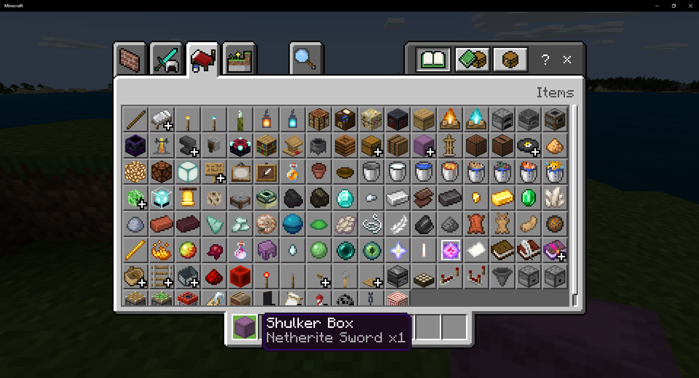

Tady můžeš stavět bez omezení!
Creative mód v Minecraftu je herní režim, ve kterém má hráč neomezené množství surovin a může volně stavět cokoliv bez omezení. Hráč nemusí řešit hlad, zdraví ani útoky nepřátel. Díky tomu je tento režim ideální pro ty, kteří chtějí tvořit, navrhovat nebo experimentovat.
V Creative módu můžeš létat, což usnadňuje stavbu velkých a složitých projektů. Inventář obsahuje všechny dostupné bloky a předměty ve hře. Můžeš si tak snadno vybrat z tisíců možností a pustit se do práce. Oblíbené jsou například stavby hradů, měst, moderních domů nebo dokonce funkčních strojů s redstonem.
Tento režim často využívají i začátečníci, protože se nemusí bát, že je někdo zabije. Slouží také jako výborný prostor pro trénink stavění nebo testování nových nápadů. V Creative módu je možné rychle a efektivně zkoušet různé kombinace bloků a stylů.
Mnoho hráčů používá Creative mód pro tvorbu map, které později sdílí s ostatními. Mnozí začínají se základními stavbami, jako jsou dřevěné chatky nebo malé farmy. Jakmile získají více zkušeností, zkoušejí složitější projekty – moderní domy, podzemní základny nebo realistické repliky známých budov. Někteří hráči dokonce pracují ve skupinách na velkých serverech, kde společně vytvářejí celé města nebo tematické parky. Stavění v Minecraftu není jen zábava, ale také kreativní proces, který rozvíjí prostorovou představivost, trpělivost a smysl pro detail. Někteří lidé si plánují stavby dopředu na papíře nebo v externích programech, jiní staví rovnou podle pocitu. Každý projekt je jedinečný a odráží osobnost a styl samotného tvůrce. Minecraft tak nabízí prostor nejen pro hraní, ale i pro umění. Díky neomezeným možnostem se tento mód stal velmi populární mezi tvůrci obsahu. Můžeš v něm navrhnout celý svět podle své fantazie.
Creative mód je tedy skvělým nástrojem pro vyjádření kreativity a tvořivosti. Neexistují žádná pravidla, kromě těch, která si sám nastavíš. Pokud máš chuť tvořit bez omezení a pustit uzdu své fantazii, Creative mód je tou pravou volbou.